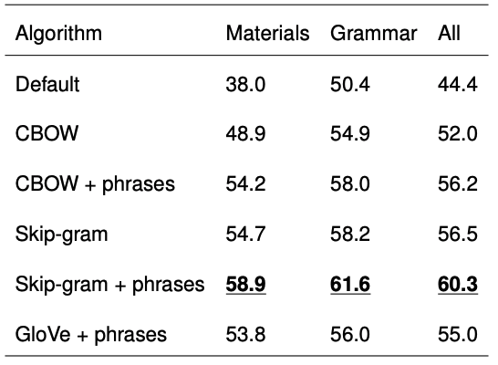
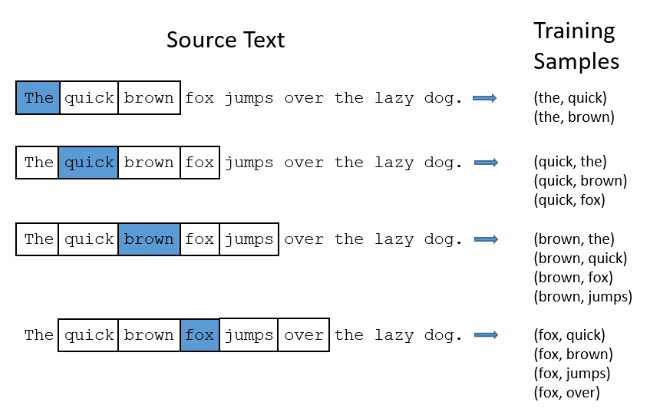
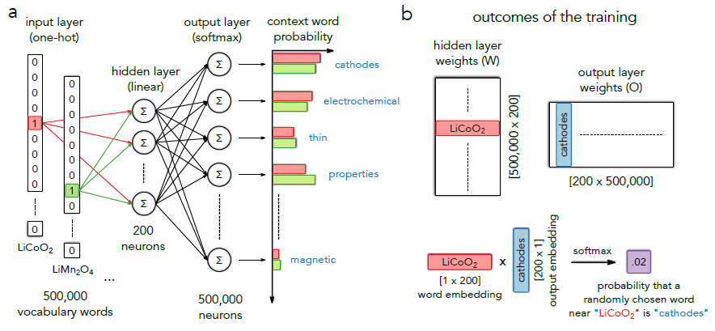
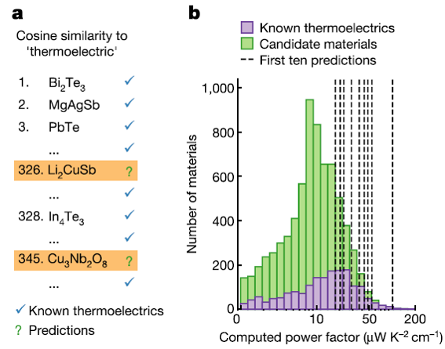
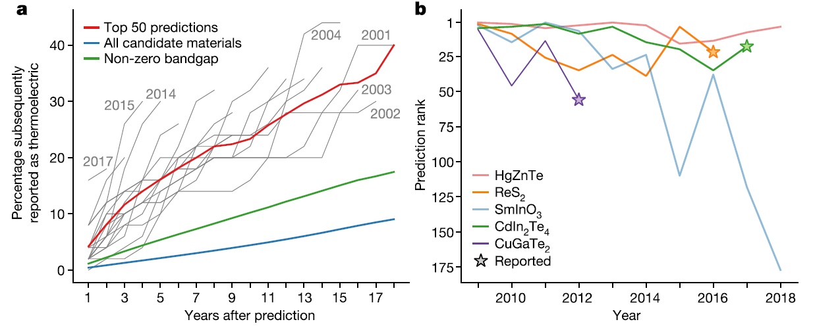
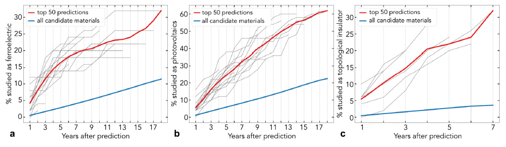

This paper is published on July 03, 2019 on Nature by Prof. Ceder group at University of California, Berkely. The first author is Vahe Tshitoyan. Here is an interview from Anubhav Jain talking about the paper.
Here is my presentation slides of this paper on our group meeting Journal Club.
Background
In real life, the majority results of scitific researches are published as text, and structured property databases only cover small portion of the knowledge present in the research literature. For example, publications usually contain valuable knowledge such as connections and relationships interpreted by the authors. Natural language processing provides a method to analyse the latent knowledge that buried in numerous papers. Conclusions: The authors said they show information-dense word embedding can capture knowledge present in the published literature. Furthermore, an unsupervised method can recommend materials for functional applications several years before their discovery.
Model
Although the authors only include skip-gram model in their paper, they also did plenty of works on other models such as continuous bag of words(CBOW). Please check if you are interested. Besides the prediction of new functionality of mateirials, they also can predict formation energy of material using word embedding.

The main idea of skip-gram model is that it takes every word in the sentence while it also takes one-by-one the words around it within ‘WINDOWSIZE’ to feed into a neural network. In this way, the trained neural network can predict the probability of each word to actually appear in the window around the focus word. The word pair forming can be illustrated as below.

They use one-hot encoding to represent each word. Word2vec skip-gram loops through all words in the training text and uses the word pairs in one-hot encoding representation as an input for a neural network. The hyperparameters of Word2vec is optimized on the combined materials science and grammatical analogies.
For similar words, their word pair will have similar hidden layer weights and therefore similar word embeddings. The softmax functions is used to normalize the output probabilities. To be more specific, Rows of W are called word embeddings and columns of O are called output embeddings. The product of the two types of embeddings is the probability of the corresponding words to be used in close proximity in the text.

Tests
Test 1 Comparion with computational dataset
They compared their predicted thermoelectric compositions with available computational data. A total of 9,483 compounds overlaps in both text and dataset. 7,663 is used as prediction because they are never mentioned alongside thermoelectric keywords in text corpus.
They ranked these compounds based on the dot product of their normalized output embedding with the word embedding of ‘thermoelectric’. The results are shown in figure below. The top ten predictions provided by their model all exhibit computed power factors significantly greater than the average of candidate materials, and slightly higher than the average of candidate materials.

Test 2 Prediction for uncovered properties of materials
They tested their model if it have correctly predicted thermoelectric materials reported later in the literature while only trained with text in the past. The overall results are presented below. Grey lines are predictions of their model. Overall, their results indicate that materials from the top 50 word embedding-based predictions(red) were on average eight times more likely to have been studied as thermoelectrics within the next five years as compared to a randomly chosen unstudied material from our corpus at that time (blue) and also three times more likely than a random material with a non-zero DFT bandgap (green).

Moreover, they examine the trend of top five predictions determined using data before 2009. Two of the predictions, ReS2 and CdIn2Te4, were reported within 8-9 years after the point of their first appearence. HgZnTe and SmInO3 are toxic or expensive. Therefore, they are never reported as thermoelectric materials.

Besides thermoelectrics, they also test their model on predicting ‘photovoltaics’, ‘topological insulator’ and ‘ferroelectric’, which show the similar results. They also mentioned that the success of their appoach can partly be attributed to the choice of the training corpus, only abstract.
Personal Thinking
From their paper, I think that their main success is that they use Word2vec model can successfully predict the reported materials with uncovered properties, which can be a great way to guide scientists to explore the potential of specific materials.
However, there are also many shortcomings of this method. The prediction is only better than half, which is not appealing to some researchers. And this model still lacks the ability to truly predict the good materials with target property. It can only provide the somewhat good choices from existing materials.
Some people may be cirtical about this paper. I think the main reason is that the authors have exaggerated a little bit of their prediction results. It may be more appropriate to call it as discovering existing materials with unknown properties.